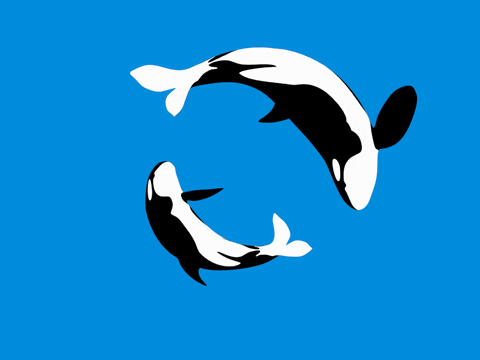

CURIOSIDADES
As baleias são mamíferos e precisam respirar, por isso as vemos indo à superfície com frequência!
Veja mais em:A orca, na verdade, é um golfinho!
Baleia Jubarte
- Seu nome científico, Megaptera novaeangliae), vem de megaptera Megaptera, que em grego antigo significa "grandes asas", enquanto novaeangliae fala do primeiro local onde foi registrada a espécie, Nova Inglaterra.
- Os Cyamus boopis, que são popularmente conhecidos como Piulhos de Baleias (embora sejam crustáceos), são comumente encontrados nas Jubartes
- Os cetáceos também tem capacidade de passar do metabulismo aeróbico para o anaeróbico.
- A baleia-jubarte, listada como "em perigo" pela Convenção sobre o Comércio Internacional das Espécies da Fauna e da Flora Silvestres Ameaçadas de Extinção (CITES), está registrada em seu Apêndice I e é protegida por todos os países com populações reprodutoras conhecidas.
Baleia Azul
- É o maior animal do mundo. A maior baleia-azul já registrada apresentou 33,6 metros de comprimento e era uma fêmea.
- Esse animal não está presente em mares regionais, tais como Mediterrâneo, Okhotsk e Bering.
- A cabeça da baleia-azul equivale a praticamente um quarto do tamanho total de seu corpo.
- O macho da baleia-azul é menor do que a fêmea.
- Uma baleia-azul pode, sozinha, em um único dia, alimentar-se de quase quatro toneladas de krill.
- A baleia-azul é uma espécie protegida por lei desde a década de 1960. Essa ação foi extremamente importante para que essa espécie não entrasse em extinção, uma vez que estava sofrendo muito com a caça. Apesar da baleia-azul ser protegida por lei, mudanças climáticas e alterações no ambiente aquático são ainda uma ameaça à espécie, que está atualmente classificada como “em perigo” na Lista Vermelha de Espécies Ameaçadas da IUCN.
Beluga
- A beluga também é conhecida como baleia-branca ou beluca.
- As belugas não têm barbatana dorsal, daí o nome “gulfinho sem barbatana”, porém, não são gulfinhos!
- Há registros de belugas machos imitando a voz humana durante a transição da fase juvenil para a fase adulta.
- Ao contrário dos outros cetáceos que mostram algum grau de fusão cervical, com exceção dos baleias, alguns gulfinhos do rio e os narvais, as sete vértebras cervicais não estão unidas entre si, o que lhe dá flexibilidade ao girar a cabeça para os lados, sem a necessidade de girar o corpo.